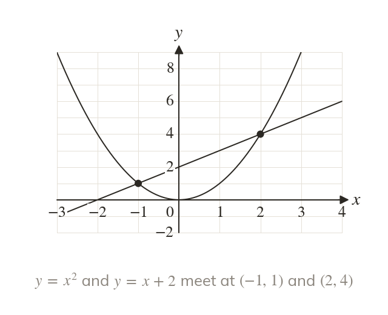
Above means greater
The inequality holds where the graph of is above the graph of The ends of each interval are where the graphs meet.
Comparing two functions asks where one graph lies above the other, which is read off a sketch once the points where they meet are known. Next lesson the same idea describes whole regions of the plane.
Work down the page at your own pace. Write every answer in your book first, then click to check it.
Read each card, then follow the worked examples one step at a time.

The inequality holds where the graph of is above the graph of The ends of each interval are where the graphs meet.
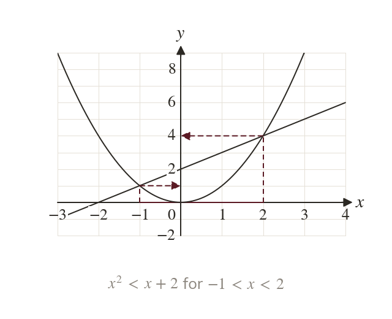
Between the meeting points the curve is below the line, so there. The interval uses their x-coordinates, and
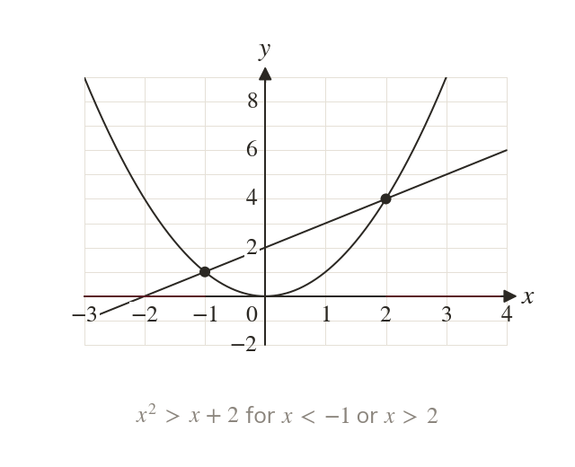
The curve is above the line to the left of the first meeting point and to the right of the second. So for or
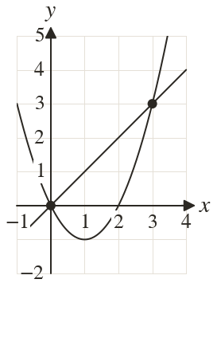
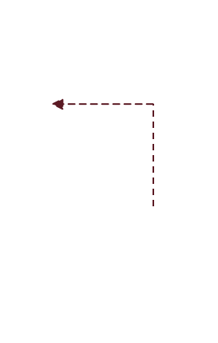
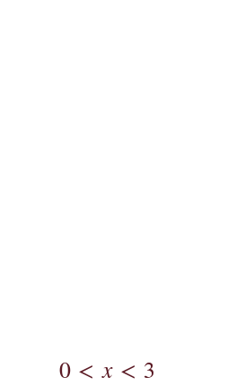
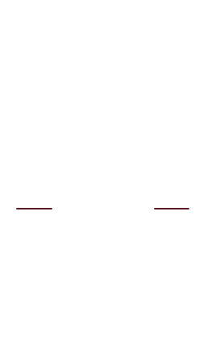
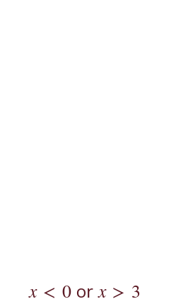
Pick an answer. If it's wrong, the feedback tells you which mistake it was.
Write the blanks in your book first, then tap each one to check.
Read each card, then follow the worked examples one step at a time.
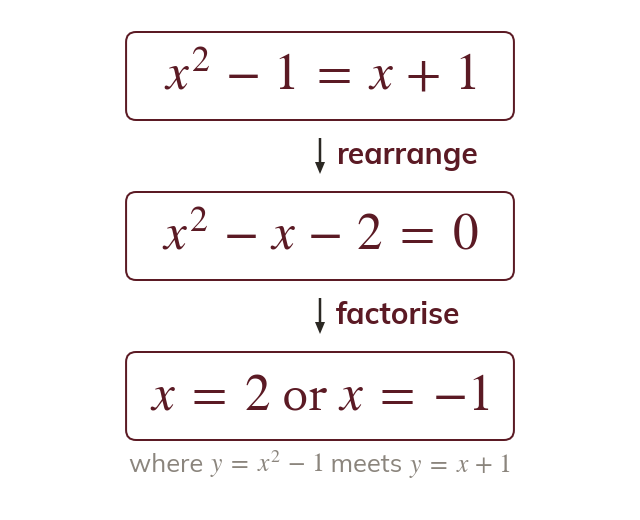
Set the two expressions equal and solve. The solutions are the x-coordinates of the points where the graphs meet.
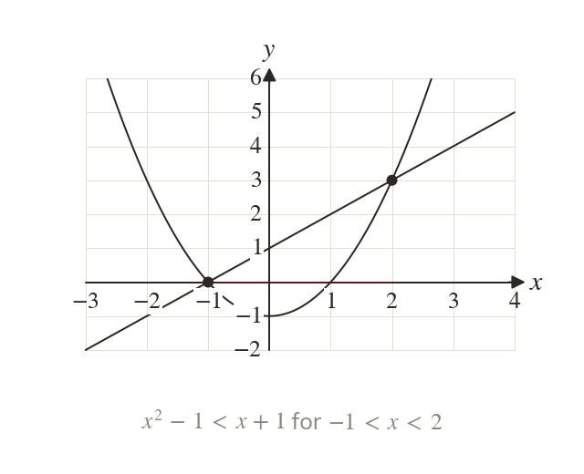
The sketch shows which graph is higher between the meeting points and outside them. Choose the interval the inequality asks for.
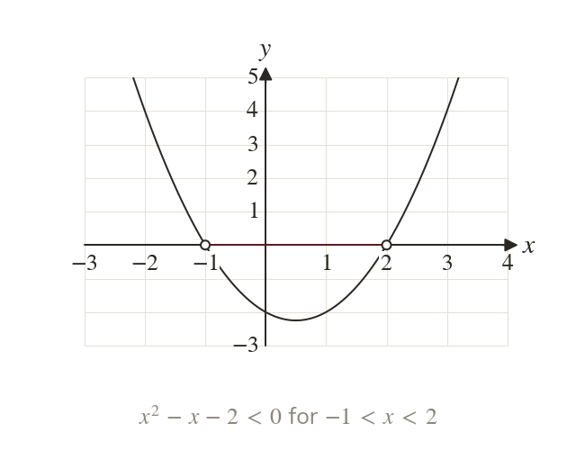
Writing as leaves one curve to compare with the x-axis. Here which holds between its roots.
Pick an answer. If it's wrong, the feedback tells you which mistake it was.
Write the blanks in your book first, then tap each one to check.
Finished? Next lesson: 3.7 Regions.
For each skill, tap the one that is true for you today. Your Revise pages start with anything you mark Not yet.
Your ratings are saved on this device only.
Log in, then search for a code to practise that skill.